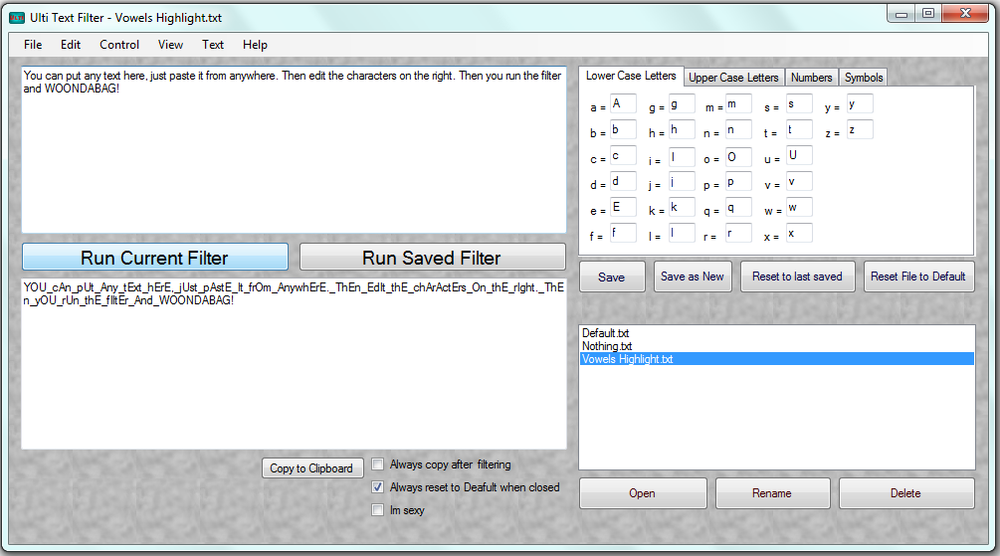
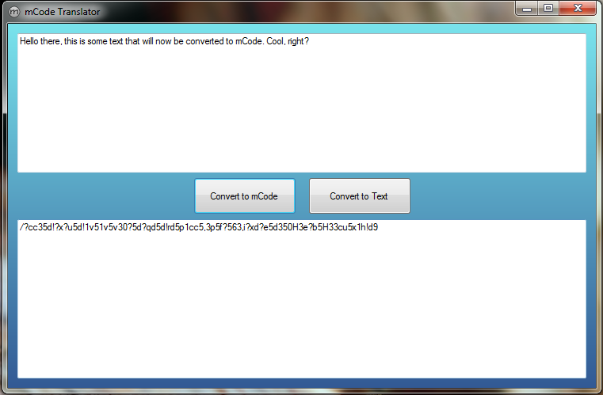
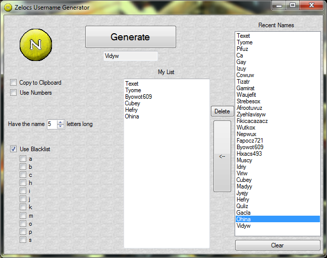
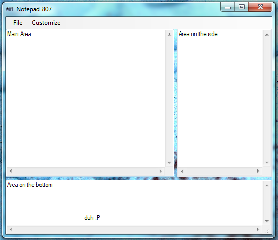
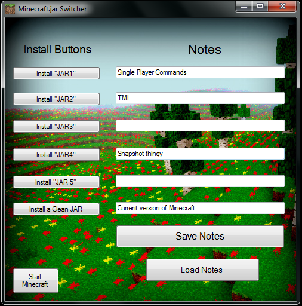

Freeware
Here are some simple programs I created using C#.

Ulti Text Filter
You can replace characters with any character of your choice in a large amount of text. So say you have a bunch of text that you want to make all caps, this can do that easily. Or if you want to replace all spaces with an underscore, this can do that. Or if you want to change each letter to a two-digit number, this can do that. Unlimited possiblities. You can create, save, load, or delete filters. My biggest program yet.
>Download<
>Full Size Image<

mCode
You enter text into a box, click a button, and it will replace characters with different characters. So 'testing' would be 'd?vd1,h'
>Download<
>Full Size Image<

Zelocs Username Generator
This randomly generates words like scolez, hozlen, krazoke, etc. You can choose how long the name is, add numbers if you want, and there is a blacklist you can change
>Download<
>Full Size Image<

Notepad 807
A notepad. But, this has three text boxes! The format is very different from your Notepad, this is not meant to be a default viewer/editor for txt files. It has it's own private text files
>Download<
>Full Size Image<

Minecraft.jar Switcher
(For the game, Minecraft) If you install mods and stuff, you may know that backing up your JARS is hard and many mods are not compatible with each other. So for this you have different JARs of your choice, and by the click of a button it will it install it for you.
>Download<
>Full Size Image<